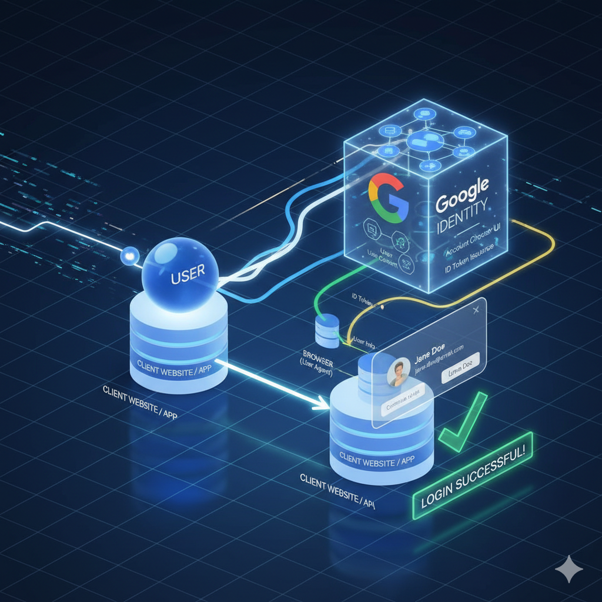

Federated authentication is a system that allows a user to access multiple independent applications or services across different domains (or companies) using a single set of credentials provided by a trusted third party, known as the Identity Provider (IdP).
In essence, a website (the Service Provider or Relying Party) delegates the responsibility of authenticating the user to the IdP. Instead of creating and managing a new account and password for every site, the user can sign in using an existing account (like Google or Facebook).
Google Identity Services (GSI) and Federated Credential Management (FedCM) are both mechanisms related to using a Google account as an Identity Provider for signing into third-party websites.
| Feature | Google Identity Services (GSI) | Federated Credential Management (FedCM) |
|---|---|---|
| Type | A library and API suite from Google (built on OAuth 2.0/OpenID Connect) for authentication and authorization. | A standard browser API designed as part of the Privacy Sandbox initiative to manage federated sign-in flows. |
| Mechanism | Relied heavily on third-party cookies, cross-site iframes, and redirects to maintain the sign-in state across different websites. | The browser acts as a secure intermediary between the Relying Party and the Identity Provider. It does not use third-party cookies or redirects. |
| User Interface (UI) | The sign-in prompts (like the "One Tap" prompt) are created and displayed by the GSI JavaScript library, which runs on the website. | The sign-in prompts are browser-mediated and displayed by the browser itself, giving users more visual control and consistency. |
| Privacy | Prone to being used for cross-site tracking because of its reliance on third-party cookies/iframes (even when not Google's intent). | Privacy-preserving by design. The browser only contacts the IdP after the user gives explicit consent via the browser's UI. |
| Future | Deprecated as a standalone solution for the core sign-in flow and is migrating to use FedCM APIs internally. | The future standard for federated identity, especially for Google Sign-In on Chrome. |
FedCM is generally considered more secure than the traditional GSI implementation (which relied on third-party cookies and iframes), especially from a privacy and user tracking perspective.

Google Chrome (and other browsers) is migrating to FedCM primarily due to the deprecation of third-party cookies as part of the broader Privacy Sandbox initiative.
Google is automatically migrating existing GSI implementations to use FedCM under the hood to ensure a continued, secure, and private sign-in experience after third-party cookies are fully restricted.
That's a very important question, as the concept of the iframe is central to understanding the security and privacy issues that FedCM is designed to solve!
Here is a detailed explanation of what an iframe is and how it relates to federated authentication and tracking.
An iframe (short for Inline Frame) is an HTML element used to embed another HTML document (a separate, complete web page) within the current one.
Think of an iframe as a mini-browser window embedded right inside the main webpage.
src attribute to point to the URL of the content it
should display.
The term "cross-site iframe" is used when the domain of the parent page is different from the domain of the content loaded inside the iframe. This is where the security and privacy issues arose, especially in the context of older Federated Authentication systems like GSI.
In the traditional Google Sign-In (GSI) implementation, the prompt (the "Sign in with Google" button or the "One Tap" dialog) was often loaded inside a hidden or nearly invisible cross-site iframe.
// The Relying Party (RP) Website Website: example.com (the Relying Party) // The Identity Provider (IdP) content loaded in a hidden iframe iFrame Source: accounts.google.com (the Identity Provider)
When example.com loaded, it would embed a hidden iframe
from accounts.google.com.
How Tracking Worked (The Problem): When the browser
loaded the iframe from accounts.google.com, the browser
would also send any third-party cookies it had for
accounts.google.com (which contained the user's login
session).
Passive Tracking: Simply by loading the iframe,
Google (the IdP) could determine that a logged-in user was currently
visiting example.com. This allowed the IdP to passively
track a user's activity across any website that
included this iframe, even if the user never clicked the sign-in
button.
FedCM (Federated Credential Management) removes the need for this cross-site iframe mechanism entirely for the authentication check:
accounts.google.com) after the
user gives explicit, visual consent via a clear, browser-controlled
dialog.
In summary, the iframe is a standard web tool, but when used to load content from a different site that relies on third-party cookies for authentication, it became a major vector for the cross-site tracking that modern privacy initiatives like FedCM are designed to block.
The Federated Credential Management (FedCM) API is part of Google's Privacy Sandbox initiative and is being implemented across the web, including within the Google Identity Services (GSI) library.
Here are the key resources you should refer to, depending on whether you are a website owner (Relying Party) or an Identity Provider:
If your website currently uses "Sign in with Google" (the GSI library), this guide explains the minimal changes required for a seamless transition to the FedCM-based flow:
use_fedcm flag) and details changes needed
for cross-origin iframes or custom button layouts.
This documentation explains the FedCM API from a browser-agnostic perspective:
If you are building your own Identity Provider service and want it to work with FedCM, you need to implement several server-side endpoints:
.well-known/web-identity file) and the endpoints the IdP
must expose to the browser.